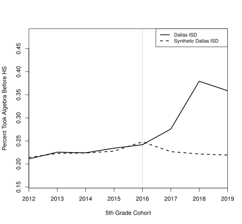
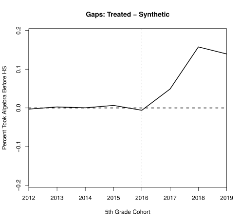
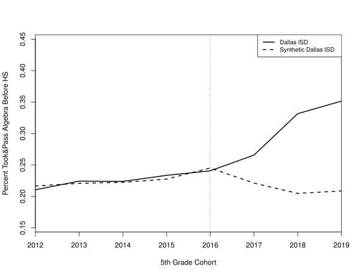
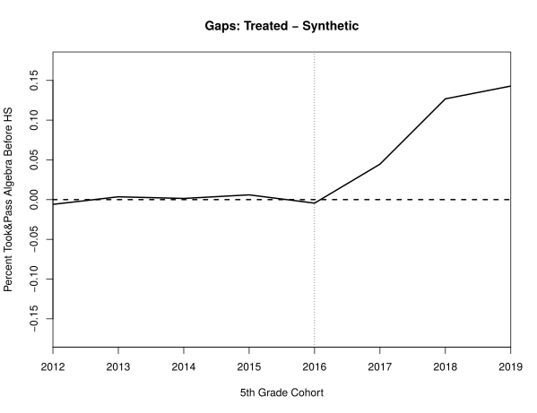
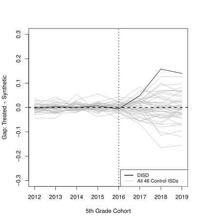
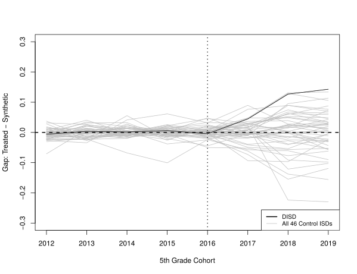
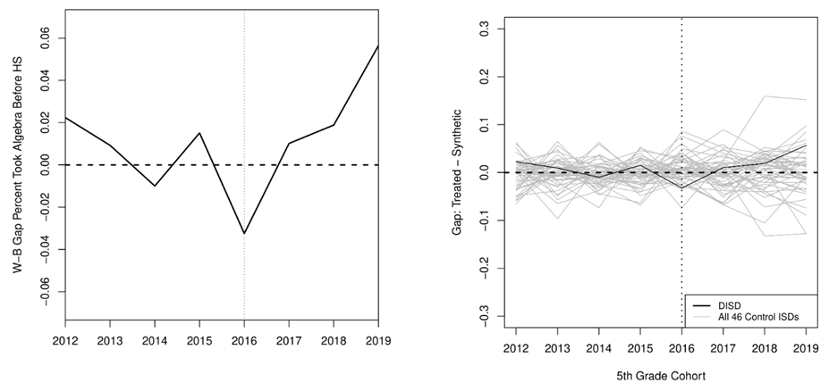
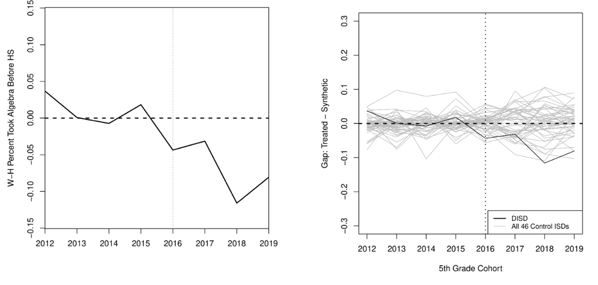
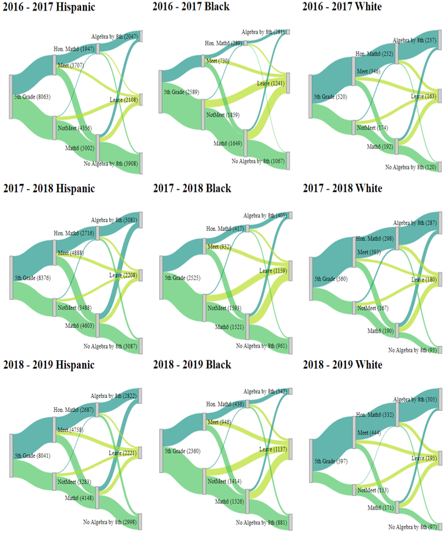

Closing the Gaps: Dallas ISD’s Opt-Out Policy
An Examination of Early Impacts of Dallas ISD’s Opt-out Policy on Advanced Course Enrollment
In 2019–20, Dallas ISD began automatically placing students who scored at Meets Grade Level or above on the 5th-grade STAAR into honors courses, unless their families opted out. Using statewide administrative data and a synthetic control design, this study estimates the policy’s effect on taking Algebra I before high school. Relative to a synthetic Dallas ISD built from comparable Texas districts, the policy raised early Algebra I enrollment by 11.7 percentage points and completion by 10.5 points. It narrowed the Hispanic–White enrollment gap by 7.6 points, while the change in the Black–White gap was small and not statistically significant. Descriptive analysis suggests that Black students did not benefit as much likely due in part to having fewer students meet the auto enrollment criterion, more students leaving DISD, and fewer non-honors track students taking Algebra I by 8th grade.
Read the working paper (EdWorkingPaper 25-1184)
Building a Synthetic Dallas ISD
No single Texas district resembles Dallas ISD, so the synthetic control method weights the 46 next-largest districts to match its pre-policy achievement, demographics, and size. Four districts receive all of the weight.
| Donor district | Weight: took & passed Algebra I (%) | Weight: took Algebra I (%) |
|---|---|---|
| Houston ISD | 44.3 | 39.5 |
| San Antonio ISD | 27.4 | 28.2 |
| Alief ISD | 17.6 | 20.8 |
| Aldine ISD | 10.7 | 11.5 |
| Other 42 | 0 | 0 |
Note. The table presents the weights assigned by the synthetic control method to construct the optimal synthetic Dallas ISD (DISD) using a combination of 4 control districts. Data source: Author’s analysis of data from the Texas Schools Project Education Research Center.
| Pre-policy characteristic | Dallas ISD | Synthetic: took & passed | Synthetic: took | All 46 controls |
|---|---|---|---|---|
| Took & passed Algebra I before HS (%) | 22.7 | 22.7 | 22.7 | 29.2 |
| Meets or Masters on STAAR Math 5 (%) | 31.8 | 33.6 | 33.2 | 43.3 |
| Free or reduced-price lunch (%) | 91.6 | 85.3 | 85.6 | 55.6 |
| Hispanic (%) | 70.7 | 69.8 | 69.8 | 48.0 |
| Black (%) | 23.1 | 20.4 | 20.4 | 14.7 |
| 5th-grade enrollment | 12,073 | 9,125 | 8,541 | 3,680 |
Note. The table compares Dallas ISD, its synthetic control district (composed of the four districts and weights reported in Table 2), and the unweighted mean of all 46 control districts across the variables used to construct the synthetic control, measured over the pre-treatment period. Synthetic DISD matches Dallas ISD substantially more closely than the sample mean on every matching variable. In the pretreatment periods, early Algebra I uptake is nearly identical to passing Algebra I before high school. Data source: Author’s analysis of data from the Texas Schools Project Education Research Center.
Effect on Early Algebra I




Note. The figure (A) and (C) shows the percentage of students taking and passing Algebra I before HS across the cohorts for both DISD and synthetic DISD. The figure (B) and (D) plots the difference between the level SCM results of DISD and Synthetic DISD. The year denotes the latter half of the academic year; for example, 2018 cohort corresponds to the 2017–2018 cohort. Data source: Author’s analysis of data from the Texas Schools Project Education Research Center.


Note. The graph shows the placebo test for enrolling and passing Algebra I before HS in DISD. The year denotes the latter half of the academic year; for example, 2018 cohort corresponds to the 2017–2018 cohort. The black line is the DISD treatment effect, while grey lines show the estimated treatment effects for all control districts as if they were treated. Data source: Author’s analysis of data from the Texas Schools Project Education Research Center.
Racial and Ethnic Gaps

Note. The left graph shows the enrollment gap in Algebra I before HS between Black and White students in DISD and its synthetic counterpart. The year denotes the latter half of the academic year; for example, 2018 cohort corresponds to the 2017–2018 cohort. The right graph presents the placebo test. The black line is the DISD treatment effect, while grey lines show the estimated treatment effects for all control districts as if they were treated. Data: Author’s analysis of data from the Texas Schools Project Education Research Center.

Note. The left graph shows the enrollment gap in Algebra I before HS between Hispanic and White students in DISD and its synthetic counterpart. The year denotes the latter half of the academic year; for example, 2018 cohort corresponds to the 2017–2018 cohort. The graph on the right is the placebo test. The black line is the DISD treatment effect, while grey lines show the estimated treatment effects for all control districts as if they were treated. Data source: Author’s analysis of data from the Texas Schools Project Education Research Center.
Student Pathways

Note. This figure illustrates pathways from 5th grade enrollment to 8th grade Algebra I, by race/ethnicity and cohort. Nodes represent total 5th grade enrollment, STAAR eligibility for honors, 6th grade honors math enrollment, 8th grade Algebra I enrollment, and students unenrolling from DISD at any point, disaggregated by cohort and race. Source: Author’s analysis of data from the Texas Schools Project Education Research Center.
Joint work with Dareem K. Antoine and Trey Miller. Data: Texas Schools Project, UT Dallas Education Research Center.